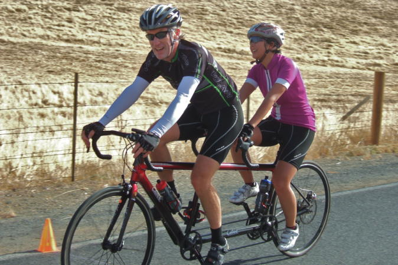

Low-Key Hillclimbs Aggregate Results:
Morgan Territory Road (S)
generated Fri Nov 4 10:34:14 PDT 2016
|
|  |
| 2012 week 3: Dan and Winnie Brehmer solo in for the win in the tandem division. (Bill Bushnell) |
Results are listed here from the Low-Key archives, sorted by time for each climb. Some years start and/or finish time differ slightly, such as
with Kings Mt Road where after 1995 the start moved from Entrance Way to Greer.
Results are ranked by time first, score second.
Score is calculated using a simple percent-of-median-speed
formula, with time adjustments for division. These scores will generally differ from those calculated in the results for that particular year, since
the scoring scheme has evolved. Tandems are split between 1998, when they were counted as single participants, and other years, when the individual
riders have been counted separately
Results for Men
| rank | time | score | rider | cat | team | year | week | code |
|---|
| 1 | 22:41 | 127.627 | Clark Foy | 45+ | Western Wheelers | 2012 | 3 | |
| 2 | 23:09 | 125.054 | Carl Nielson | 50+ | Sr's & Mr's of No Mercy | 2012 | 3 | |
| 3 | 23:41 | 122.238 | Rob Manchester | 35+ | | 2012 | 3 | |
| 4 | 23:42 | 122.152 | Jared Hudson | 30+ | Squadra SF | 2012 | 3 | |
| 5 | 23:46 | 121.809 | Tim Clark | 45+ | Low-Key | 2012 | 3 | |
| 6 | 23:51 | 121.384 | Ciaran Byrne | 40+ | Sr's & Mr's of No Mercy | 2012 | 3 | |
| 7 | 24:07 | 120.041 | Alan Nevin | 40+ | IronData Thirsty Bear | 2012 | 3 | |
| 8 | 24:34 | 117.843 | James Porter | 3 | Western Wheelers | 2012 | 3 | |
| 8 | 24:34 | 117.843 | Andy Crews | 40+ | Diablo | 2012 | 3 | |
| 10 | 24:35 | 117.763 | Brian Schuster | 25+ | Dolce Vita Cycling | 2012 | 3 | |
| 11 | 24:36 | 117.683 | Rich Hill | 45+ | LGBRC | 2012 | 3 | |
| 12 | 25:13 | 114.805 | Chris Furgiuele | 35+ | Dolce Vita Cycling | 2012 | 3 | |
| 13 | 25:21 | 114.201 | Alexander Komlik | 45+ | San Jose Bike Club | 2012 | 3 | |
| 14 | 25:22 | 114.126 | Steve Fielding | 45+ | | 2012 | 3 | |
| 15 | 25:26 | 113.827 | Travis Retzer | 4 | Eden Bicycles | 2012 | 3 | |
| 16 | 25:28 | 113.678 | Edvard Wendelin | 25+ | | 2012 | 3 | |
| 17 | 25:46 | 112.354 | Dennis Van Hoof | 35+ | Type 1 Diabetes | 2012 | 3 | |
| 18 | 25:53 | 111.848 | Bill Brier | 50+ | Team Fremont FFBC p/b Chipotle | 2012 | 3 | |
| 19 | 26:03 | 111.132 | Joe Fant | 50+ | The Brown Zone | 2012 | 3 | |
| 20 | 26:10 | 110.637 | Joseph Sullivan | 35+ | San Jose Bike Club | 2012 | 3 | |
| 21 | 26:28 | 109.383 | Joe Karbowski | 30+ | Team Ryan Powell | 2012 | 3 | |
| 22 | 26:29 | 109.314 | J.D. Daniels | 35+ | Eden Bicycles | 2012 | 3 | |
| 23 | 26:31 | 109.177 | Bill Dvorak | 55+ | | 2012 | 3 | |
| 24 | 26:40 | 108.562 | Takanobu Seimiya | 40+ | Nikon Cycling Club | 2012 | 3 | |
| 25 | 27:03 | 107.024 | Martin Hyland | 55+ | Western Wheelers | 2012 | 3 | |
| 26 | 27:06 | 106.827 | Chris Kovacs | 35+ | Eden Bicycles | 2012 | 3 | |
| 27 | 27:53 | 103.825 | chris mickelsen | 55+ | Who would have me | 2012 | 3 | |
| 28 | 28:00 | 103.393 | Naoto Sato | 45+ | | 2012 | 3 | |
| 29 | 28:06 | 103.025 | Ryan Powell | 35+ | Team Joe Karbowski | 2012 | 3 | |
| 30 | 28:13 | 102.599 | Gonzalo Carrillo | 45+ | Team Fremont FFBC p/b Chipotle | 2012 | 3 | |
| 31 | 28:22 | 102.056 | Brandon Iles | 30+ | Google | 2012 | 3 | |
| 32 | 28:28 | 101.698 | Alan Weatherall | 50+ | San Jose Bike Club | 2012 | 3 | |
| 33 | 28:41 | 100.930 | Paul Diac | 25+ | | 2012 | 3 | |
| 34 | 28:56 | 100.058 | Brad Ford | 35+ | Silicon Valley Triathlon | 2012 | 3 | |
| 35 | 28:58 | 99.942 | Thomas Rabedeau | 55+ | SLACer | 2012 | 3 | |
| 36 | 29:06 | 99.485 | Carl Butler | 55+ | Sr's & Mr's of No Mercy | 2012 | 3 | |
| 37 | 29:09 | 99.314 | Toshi Tajima | 45+ | Google | 2012 | 3 | |
| 38 | 29:30 | 98.136 | TOM FERREIRA | 5O | Eden Bicycles | 2012 | 3 | |
| 39 | 29:47 | 97.202 | Plamen Velikov | | SLACer | 2012 | 3 | |
| 39 | 29:47 | 97.202 | dave desantos | 50+ | team batson | 2012 | 3 | |
| 41 | 29:57 | 96.661 | Peter Maloney | 40+ | | 2012 | 3 | |
| 42 | 30:30 | 94.918 | Scott Byer | 45+ | Google | 2012 | 3 | |
| 43 | 30:31 | 94.866 | Peter Ingram | 55+ | Ind. | 2012 | 3 | |
| 44 | 30:42 | 94.300 | Terrance Kloeckl | 50+ | | 2012 | 3 | |
| 45 | 31:23 | 92.246 | Mihai R. | 30+ | Google | 2012 | 3 | |
| 46 | 31:38 | 91.517 | John Armour | 50+ | San Jose Bike Club | 2012 | 3 | |
| 47 | 31:39 | 91.469 | Bart Niechwiej | 35+ | Google | 2012 | 3 | |
| 48 | 32:00 | 90.469 | Greg Watson | 45+ | Palo Verde Velo | 2012 | 3 | |
| 49 | 32:08 | 90.093 | Mike Wilkins | 50+ | team batson | 2012 | 3 | |
| 50 | 32:15 | 89.767 | Jeff Shute | 30+ | Google | 2012 | 3 | |
| 51 | 32:21 | 89.490 | MichaelsJ. Andalora | 60+ | Bike Trip/Symantec | 2012 | 3 | |
| 52 | 32:36 | 88.804 | Wink Saville | 60+ | Google | 2012 | 3 | |
| 53 | 32:41 | 88.577 | Nic Brummell | 50+ | Atlas | 2012 | 3 | |
| 54 | 33:14 | 87.111 | Bastian Sopora | 25+ | Team Fremont FFBC p/b Chipotle | 2012 | 3 | |
| 55 | 33:56 | 85.314 | Stephen Fong | 45+ | CyclePath Racing | 2012 | 3 | |
| 56 | 34:10 | 84.732 | Robert Sexton | 40+ | Western Wheelers | 2012 | 3 | |
| 57 | 35:32 | 81.473 | Alex Cortez | 40+ | Team Fremont FFBC p/b Chipotle | 2012 | 3 | |
| 58 | 36:00 | 80.417 | Barry Burr | 50+/ Cat 4 | Barry Beams Bike Lighting | 2012 | 3 | |
| 59 | 36:38 | 79.026 | eric doelling | 50+ | | 2012 | 3 | |
| 60 | 37:32 | 77.131 | Gregory P. Smith | 35+ | Google | 2012 | 3 | |
| 61 | 38:04 | 76.051 | Sachin Bhatia | 30+ | | 2012 | 3 | |
| 62 | 38:47 | 74.645 | Andy Morozovsky | 55+ | Eden Bicycles | 2012 | 3 | |
| 63 | 39:23 | 73.508 | Tim Sutton | 50+ | Plus 3 | 2012 | 3 | |
| 64 | 53:55 | 53.694 | Stephen Newcom | 50+ | | 2012 | 3 | |
Results for Hybrid Electric
| rank | time | score | rider | cat | team | year | week | code |
|---|
| 1 | 14:32 | 115.745 | Bill Bushnell | It's Mostly The Bike | Low-Key | 2012 | 3 | |
Results for Women
| rank | time | score | rider | cat | team | year | week | code |
|---|
| 1 | 27:10 | 128.546 | Lisa Penzel | 45+ | The Brown Zone | 2012 | 3 | |
| 2 | 29:22 | 118.916 | Lynn Sestak | 50+ | The Brown Zone | 2012 | 3 | |
| 3 | 30:07 | 115.954 | Amy Cameron | 30+ | | 2012 | 3 | |
| 4 | 31:31 | 110.804 | Laura Hipp | 4 | Western Wheelers | 2012 | 3 | |
| 5 | 33:12 | 105.186 | Lisa Emmerich | 50+ | Sr's & Mr's of No Mercy | 2012 | 3 | |
| 6 | 35:30 | 98.371 | Heidi Fraser | 50+ | Cat 4 | 2012 | 3 | |
| 7 | 36:24 | 95.938 | Jacqueline Retzer | 30+ | Eden Bicycles | 2012 | 3 | |
| 8 | 38:38 | 90.392 | Bobbi Aniker | | | 2012 | 3 | |
| 9 | 42:03 | 83.048 | Alison Chaiken | 50+ | Sr's & Mr's of No Mercy | 2012 | 3 | |
| 10 | 42:32 | 82.104 | Christine Holmes | 45+ | Low-Key | 2012 | 3 | |
| 11 | 43:10 | 80.899 | andrea ivan | | Silicon Valley Triathlon | 2012 | 3 | |
Results for Tandem
| rank | time | score | rider | cat | team | year | week | code |
|---|
| 1 | 33:17 | 86.980 | Dan Brehmer | 45+ | SLACer | 2012 | 3 | |
| 1 | 33:17 | 86.980 | Winnie Lam Brehmer | Stoker | SLACer | 2012 | 3 | |
| 3 | 34:55 | 82.912 | Will von Kaenel | 50+ | LGBRC | 2012 | 3 | |
| 3 | 34:55 | 82.912 | Lynn von Kaenel | Stoker | LGBRC | 2012 | 3 | |